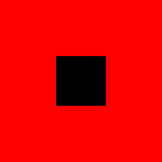
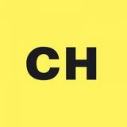

Опыт работы
-

Red Mad Robot • Product Designer
февраль 2026 — май 2026
Стартап: приложение для мигрантов в России, которое помогает с адаптацией, поиском работы и открытием зарплатной карты.
Проект закрылся после прекращения финансирования.
-

Jusan Bank • Design System Designer (iOS/Android)
октябрь 2024 — февраль 2026
Нативная дизайн-система для iOS и Android: общая библиотека для B2C- и B2B-приложений.
Тесно работал с разработчиками и внедрил тестовые приложения с компонентами, чтобы проверять логику, анимации и соответствие дизайну. С командой проводили UX-тесты компонентов среди продуктовых дизайнеров, чтобы по их обратной связи улучшать сами компоненты.
-

X5 Digital • Design System Designer (BDUI)
сентябрь 2023 — сентябрь 2024
Общая дизайн-система для приложений трёх торговых сетей: Перекрёсток, Пятёрочка и Чижик. Экраны собирались на сервере (BDUI) на основе DivKit от Яндекса.
В команде дизайн-системы отвечал за UI компонентов. Внедрил дизайн-токены, чтобы одна библиотека работала для всех трёх брендов.


-
Tele2 / Altel • Product Designer
июль 2022 — сентябрь 2023
Покупка и перенос номера, продажа контрактных смартфонов в приложении. После релиза покупки нового номера выросли на 420%, переносы — на 213%.
Отвечал за нативную дизайн-систему приложения, а для сайта и админки менеджеров внедрил Ant Design, чтобы ускорить разработку. Оборудовал комнату для CustDev и UX-тестов, помогал дизайнерам и выстраивал дизайн-процессы.


-

Альфа-Банк • Product Designer
сентябрь 2020 — июнь 2022
B2B-продукты для малого и среднего бизнеса: онлайн-кредитование на вебе, онбординг и коммуникации, админка для управления FAQ и онбордингом новых функций.
Адаптировал дизайн-систему российского Альфа-Банка под наше приложение, добавлял компоненты и помогал дизайнерам с ней работать. На её основе вёл редизайн приложения и сайта, участвовал в CustDev и замерах SUS и SUM.


-

Chulakov Studio • UX Design Intern
март 2020 — май 2020
Отзывы коллег
-

Ерлан
Product Owner. Альфа-Банк
Работал с Аманом в Альфа-Банке и стартапах. Показал себя как профессионал высокого уровня. Отлично управляет дизайном продукта и дизайн-системой, нацелен на результат и эффективно решает задачи.
Легко выстраивает рабочие отношения внутри команды и с другими отделами
-

Алтынай
Product Owner. Tele2
Аман профессиональный продуктовый дизайнер, умеющий балансировать между функциональностью и эстетикой. Его решения основаны на данных и метриках, что помогает улучшать продукт.
Он быстро адаптируется к изменениям и активно участвует в командной работе, предлагая полезные идеи и поддерживая коллег
-

Хуршед
CEO. Loftylab
Аман работал в нашем digital-агентстве в период роста компании и проявил себя как проактивный, спокойный и умный дизайнер.
Он не только занимался дизайном, но и предлагал идеи для развития агентства, которые были реализованы. Его никогда не приходилось подгонять или контролировать
-

Балтабек
Design Lead. Альфа-Банк
Аман отличный дизайнер с очень системным мышлением. Он лидировал редизайн мобильного приложения и веб сайта для МСБ, а также курировал работу над Core стримом и дизайн системой.
Часто находил быстрые и точные решения в сложных ситуациях, что не раз помогало всей команде двигаться к цели
-

Алина
Research Lead. Альфа-Банк
Часто смотрит на решение дизайн проблем под углом, который не видят другие члены команды, благодаря этому может генерировать нестандартные идеи при проектировании сложных систем.
Я думаю с Аманом можно работать в проектах, требующих нового взгляда, когда необходимо переосмыслить устоявшуюся систему и улучшить ее